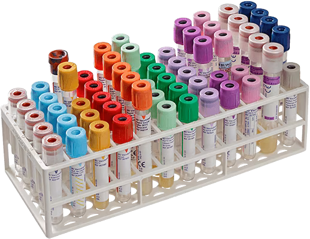

HOW IS A BLOOD COUNT DONE?
Blood test consists of an exam often used in healthcare to determine its physiological and biochemical state.
It can be useful to recognize diseases, the effectiveness of pharmaceutical drugs, organ function, et cetera.
The blood is usually collected with a needle attached to a syringe inserted into the vein, after labeling the
sample and documenting the patient's info, the vacutainer tubes containing the blood gets sent to processing
and then analysis; most routine laboratory tests are performed in plasma or serum, to achieve that, they
must be separated from the blood cells by centrifugation.
Most commonly, blood tests are used to count and measure red blood cells, white blood cells and platelets.
There are a few different ways to identify what’s going to be analyzed in the test, in a way to avoid possible
mistakes, the vacutainer tubes are identified with the following colors below:
• Light blue: Sodium citrate, used for coagulation tests;
• Red: Red/plain, used for immunology or serological examination;
• Gold: Serum separating tube, used for all biochemistry tests;
• Light green: Heparin tube, prevent clotting - used for chromosome testing, HLA typing, ammonia,
lactate.
• Purple: EDTA, used for complete hemogram;
• Pink: EDTA (whole blood sample being sent to transfusion lab), used for testing autoimmune anemia,
HIV viral load;
• White: Sodium fluoride, used for glucose or lactate testing
• Yellow: Acid-citrate-dextrose, used for DNA studies, HIV cultures and tissue typing.
